Bifx Live: Introduction To Snakemake
Snakemake is a powerful python based workflow management system, commonly used to build bioinformatics analysis pipelines. This will demonstrate how to run snakemake, why it is useful and introduce the key elements needed to start writing your own workflows.
All that is needed to run snakemake is a ‘Snakefile’ and this command;
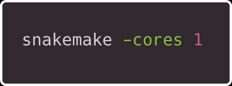
Simple Demo
Let’s take making a cup of tea as a simplistic example, the order of the steps is obviously important, we cant steep tea without boiled water.
Looking at an individual rule
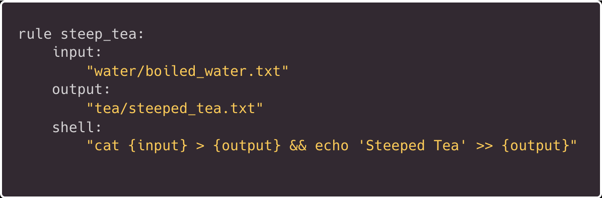
Let’s look at the whole workflow;
cat Snakefile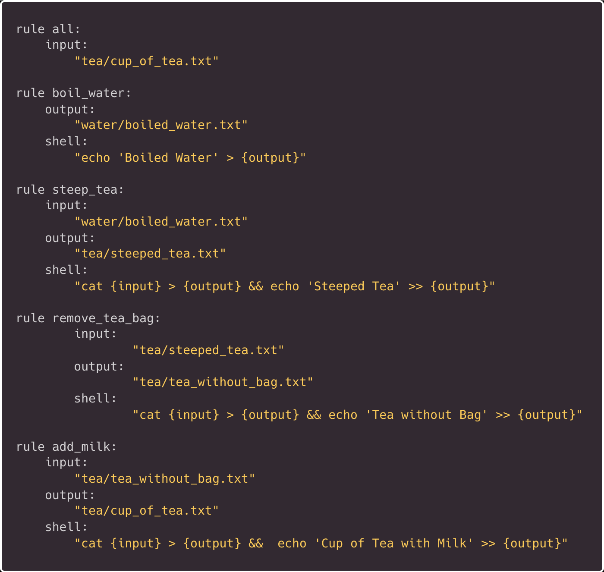
Snakemake needs a final target output, generally this is defined at the very start of the workflow as rule all.
Before we run our first workflow, lets do a dry run (this is achieved by adding the -n option)
snakemake --cores 1 -np–cores ‘Use at most N CPU cores/jobs in parallel’ (Remember, this is an essential parameter)
-p ‘Print the shell commands that will be run to terminal’
-n ‘dry-run (do not execute)’
This will print our commands but won’t actually run anything
If everything looks okay, we are ready to run this in anger;
snakemake --cores 1 -pHopefully we have created some new directories and files in sequence;
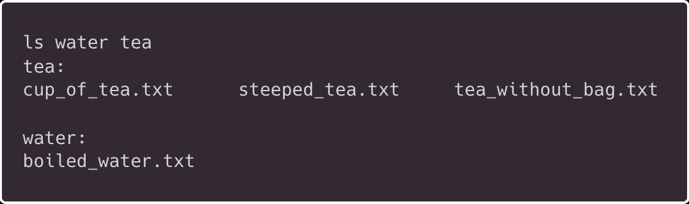
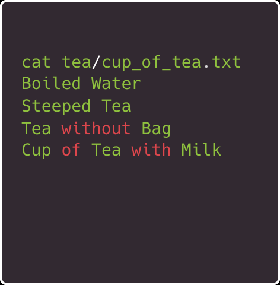
What happens if we run this workflow again?
“Nothing to be done (all requested files are present and up to date).”
This is because the final target (cup_of_tea.txt) already exists
We could force snakemake to re-run but lets play around with intermediate files and rules;
Lets manually remove our tea directory and its contents
rm -r teaHere we change the target so we only re-run a single rule;
snakemake --cores 1 -p tea/steeped_tea.txt Or we could call the rule by name;
snakemake --cores 1 -p steep_teaNote if running this after previous command add the –force (-f) flag (as the file already exists)
Looking at the output, this only outputs the target file/rule output, but it doesn’t run the first step as that already exists, this is useful as we don’t repeat the early (potentially slow) steps.
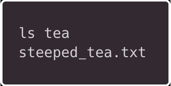
We can run any stage of the workflow we want by changing target or explicitly calling a rule.
If we now re-run our whole workflow, it will start from remove_tea_bag as it recognises steep_tea.txt exists and understands we have to remove the tea bag before adding milk!
snakemake --cores 1 -p A useful feature is to build a Directed Acyclic Graph (DAG), basically a flow chart;
snakemake --cores 1 -p --dag | dot -Tsvg > tea_dag.svg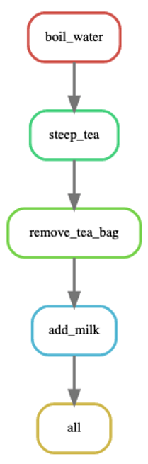
Real World Demo
Here will we have a slightly more complex workflow using some real data and tools (taken from the snakemake documentation). This performs read mapping with some intermediate steps before performing variant calling on multiple samples.
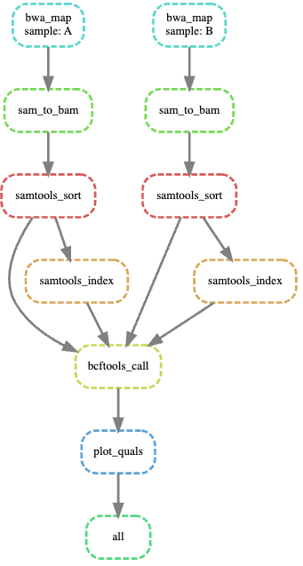
Lets take a look at this Snakefile, we can see we now have multiple samples and we are actually running tools, note the formatting depends on the specific nature of that tool.
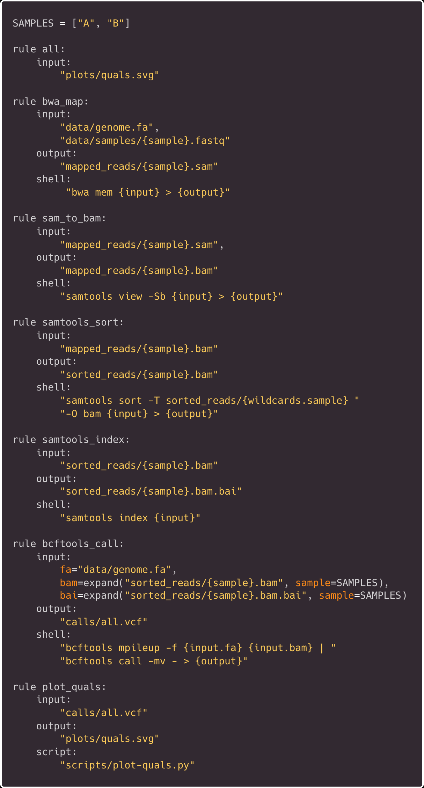
There is a lot of new things going on here;
There are multiple inputs for some commands,
Wildcards is used to reference sample name only (within the shell)
The expand fuction allows us to reference multiple samples
bcftools inputs are labelled (fa/bam etc.) - this allows the fasta to be printed next to the -f flag
Piping outputs is still possible within a single rule
Rule plot_quals is calling a script rather than a tool via shell
Don’t worry too much about these aspects for now, following this tutorial would make a good starting point if you want to start learning how to make your own workflows
Lets run this new workflow, don’t forget to do a dry run first (-n);
snakemake --cores 1 -pThe final output is a plot from our script;
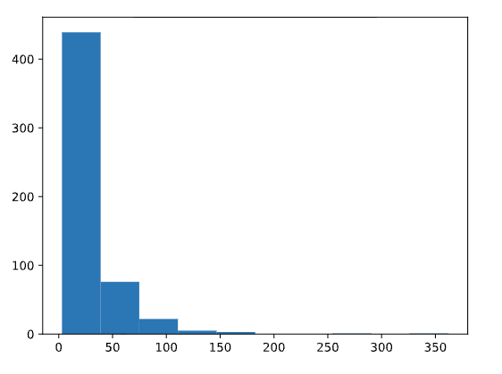
It shows the distribution of quality scores from our variant calls file.
Best Practices
Generally its best practice to set variables inside a config file (config.yaml) rather than inside the Snakefile itself e.g. setting software versions, reference genomes or tool parameters. This can then be referenced by the Snakefile (configfile: “config.yaml”), this is easier as workflows can become complex.
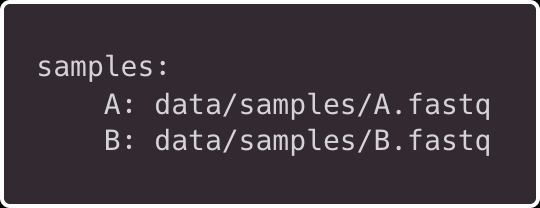
Also samples names can be set here but consider a separate samples file for complex tables.
As mentioned, this more advanced example is taken from the snakemake documentation, this is a good place to start before writing your own workflows, also as a part of our Autumn training series, we will cover pipelines on the 8th of December, this will include snakemake.
Setting up Snakemake
Snakemake recommends installing via Pixi/conda;
pixi global install snakemake conda -c conda-forge -c biocondaInstructions for setting up tutorial
mkdir snakemake-tutorial
cd snakemake-tutorial
curl -L https://api.github.com/repos/snakemake/snakemake-tutorial-data/tarball -o snakemake-tutorial-data.tar.gz
tar -xf snakemake-tutorial-data.tar.gz --strip 1 "*/data" "*/environment.yaml"
pixi init --import environment.yaml
# type 'exit' to return to base shellI encourage you to build up the Snakefile incrementally starting with the basics.
You can view the full tea Snakefile here.